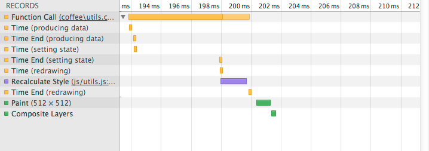
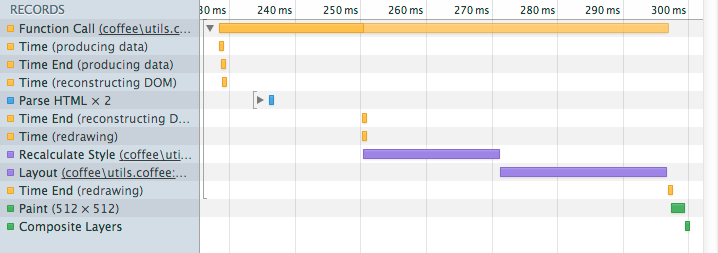
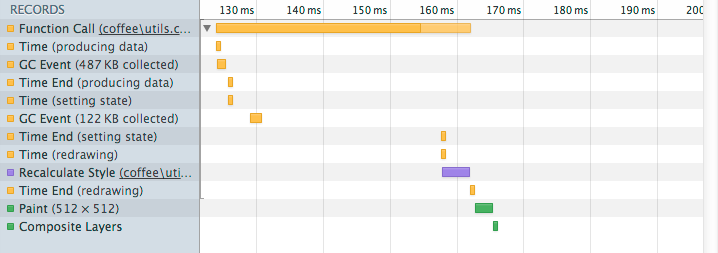
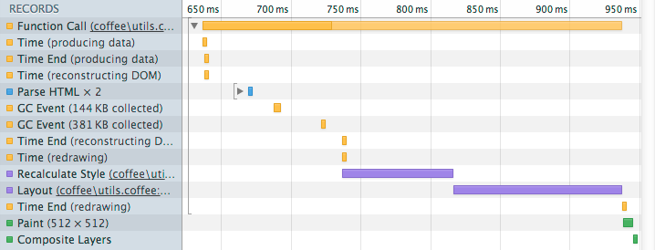
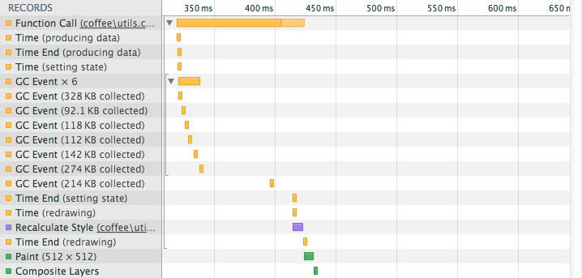

What’s the +DIFF?
React.createClass({...})
render: function() {
// Return a Javascript representation of a DOM element.
return React.DOM.tagName(propsObj, renderableOrRenderables);
}
render: function() {
// For example, a button with a click handler.
return React.DOM.button({ onClick: this.handleQuitClick }, 'Quit');
}
render: function() {
// You may also return a React component, instead of bare DOM.
return SomeOtherReactComponent(...);
}
render: function() {
// Create an <li> for every city in this component's state
var listItems = this.state.cities.map(function(cityName) {
return React.DOM.li(null, cityName);
});
// Return the cities wrapped in a <ul>
return React.DOM.ul({ className: 'cities' }, listItems);
}
// Before rendering
componentWillMount: function() { ... }
// After rendering
componentDidMount: function() { ... }
// Just before removal
componentWillUnmount: function() { ... }
// Before props mutate. Not called on first render.
componentWillReceiveProps: function(/* object */ nextProps) { ... }
// Before rendering, whenever props or state mutate.
// Not called on first render.
componentWillUpdate: function(/* object */ nextProps,
/* object */ nextState) { ... }
// After rendering.
// Not called on first render.
componentDidUpdate: function(/* object */ prevProps,
/* object */ prevState) { ... }
// Think you're smarter than React? YOU be the decider.
// Return true or false from here to permit or prevent re-rendering.
shouldComponentUpdate: function(/* object */ nextProps,
/* object */ nextState) { ... }
// Defaults to merge with those given when the component is constructed.
getDefaultProps: function() {
return { turnLimit: 30 };
}
// Calculate and return what the initial state should be.
getInitialState: function() {
return { turnsRemaining: this.props.turnLimit };
}
propTypes: {
// Enforce some types
name: React.PropTypes.string.required, // Required string
turnLimit: React.PropTypes.number // Optional number
}
// Lifecycle methods to mix in.
// Methods chain with the ones declared on the
// class itself, rather than overriding them.
mixins: [ ObjectOfLifecycleMethods, AnotherObjectOfLifecycleMethods ]
// Create an instance of your component class
var component = MyReactComponent(...);
// Render it into an existing DOM node
React.renderComponent(component, document.body);
var CityList = React.createClass({
propTypes: {
country: React.PropTypes.string.required
},
getInitialState: function() {
return {
cities: COUNTRY_CITIES[this.props.country]
};
},
render: function() {
var listItems = this.state.cities.map(function(cityName) {
return React.DOM.li(null, cityName);
});
return React.DOM.ul({ className: 'cities' }, listItems);
}
});
CityList({ country: 'Canada' });
CityList = React.createClass
propTypes:
country: React.PropTypes.string.required
getInitialState: ->
cities: COUNTRY_CITIES[@props.country]
render: ->
React.DOM.ul className: 'cities',
React.DOM.li(null, cityName) for cityName in @state.cities
CityList(country: 'Canada')
var gridPoints = [
{ brightness: 0.0 },
{ brightness: 0.1 },
{ brightness: 0.0 },
{ brightness: 0.9 },
{ brightness: 0.0 },
{ brightness: 0.0 },
…
];
1000ms / 60fps = ~16ms/f
Native version × 1024 elements
React version × 1024 elements
Native version × 4096 elements
React version × 4096 elements
Native version × 16384 elements
React version × 16384 elements

shouldComponentUpdate: function(nextProps) {
// Brightness didn't change? Prevent re-rendering by returning false.
return this.props.brightness !== nextProps.brightness;
}
Thanks to Pete Hunt for the suggestion.